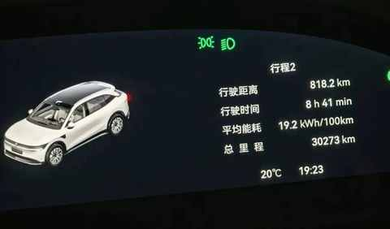
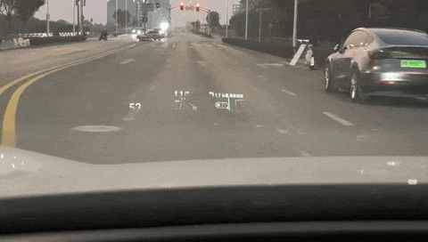
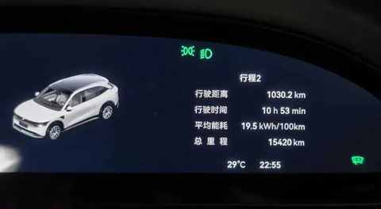

从新鲜到习惯：16 个月开极氪7X跑3万公里后，我离不开的与早已忽略的
引子
这辆极氪 7X的总里程已超过 3w 公里，又到了可以做一次用车小结的时候。

去年写过三篇文章，主要是 关于极氪 7X 的使用感受和体验的 ：
- 11 个月，开极氪7X跑两万公里，用车总结及好物分享
- 拒绝偏科，回归实用：极氪7X，为家庭用户打造的一款“正常”的纯电 SUV
- 7 个月开极氪7X跑16000km后，分享这 5 个真实用车体验
驾驶极氪 7X 的这 3w 公里，对车也有了更深入的思考。
离不开的配置
以下配置，排名不分先后，都是整个用车体验中不可或缺的一环。
HUD
先声明，7X 是有仪表盘的，清晰度也不错。
如果一定要在仪表盘和 HUD 里面二选一的话，那我选 HUD。

只所以做这个选择，主要基于这三个因素：清晰度、无需转换视线、信息量充足。
辅助驾驶
有一说一， 极氪的其他车型不知道，但7X的辅助驾驶，依然有较大的提升空间。
目前我的策略偏保守，只在高速车流量不大的时候用，总体上的表现在 50-70 分浮动，有时候还行，有时候莫名其妙。
因为有辅助驾驶，一个人单日开 1000km能不那么累。

电动遮阳帘
无需多言，懂得都懂，尤其是在夏天。
物理遮阳帘的隔热效果杠杠的。
方向盘加热
秋冬季节开车必备，特别是早上送娃上学的时候，开个几分钟方向盘就暖了。
加热的速度很快，开最高档，车还没出车库就已经热起来。
主驾头枕音响
一个用了便回不去的配置，我们很可能在开启导航的同时听歌听播客，有时候也会来个电话。
这种时刻就是头枕音响发挥作用的场景，在你听歌的时候导航的语音提醒会从头枕音响发声，来电话了同样也不会打断正在播放的音乐，因为电话的声音也是从头枕音响发出来。
后排沙发
作为驾驶员，这个配置似乎与我无关。
但关系大着呢，家人在后排坐的舒服了，驾驶员所受的干扰会大大减少。
空悬
虽然一年用不了几次，而且 7X 的空悬是单腔只支持高度调节，调节范围是 7cm，但已经足够应对突然情况和特殊路段。
去年暑假临时在厦门停留一晚，遇到大雨，要过一个涉水路段，当时很多轿车纷纷掉头，我把空悬调到最高后，顺利安全通过。
早已忽略的用车细节
随车里程的增加，用车时间变长，有一些缺点和调性早已习惯。
从 习惯到被忽略，但 忽略不代表不被感知，只是有了预期，在某些情况下总会出现一些事情，因为早已自适应。
电门调教
之前感受比较深刻的是迟滞感，在一次走山路的时候发现踩电门和刹车的时机老是把握不好，要么是慢了点，要么是快了点，切换成运动模式也差一点点。
一致性是后面试驾了理想的 i6和 i8后，在看了一些相关的测评后学到的，主要是讲电门在各种驾驶模式下的一致性，能让驾驶的过程更顺畅，踩刹车的时候也更自信一点。
后排晃动
主要是左右方向的晃动，在车库或停车场过减速带的时候特别明显。
焕新版 7X 发布后，也特地去试驾了，发现晃动有减小但依然能明显感知到。
驾驶模式
极少切换驾驶模式，目前用的是标准模式。
电车的好处之一，几乎在任何模式下，电门的响应都很快。再加上7X 偏运动的调教，即使是舒适模式也比一些车的运动模式还运动。
不够聪明的 Eva
响应速度尚可，但长对话的理解能力偏弱，够用但其进步空间和辅助驾驶一样，都挺大的。
希望 7X 的 Eva 能早日升级为超级 Eva。
结语
行至三万公里，这次“小结”得出的最终结论，并非一份优劣清单，而是一种对车更深的理解。 我理解了为何某些配置不可或缺，也理解了为何有些缺点可以忽略。
一辆好车的标准，或许不是没有缺点，而是它的优点足矣打动你，它的缺点又至于让你厌恶。